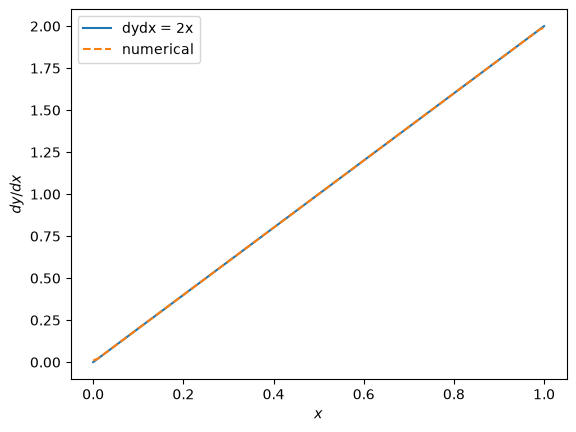

Day 4: Analyzing MESA Outputs II#
In this notebook, we’ll introduce two astropy modules that may be useful – units and constants. We will walk through computing numerical derivatives. We will also walk through hydrostatic equilibrium again.
Note: you may need to install mesa_reader on Google Colab or on your Jupyter notebook, by running a cell with “!pip install mesa_reader”
# this cell imports all the necessary libraries
import numpy as np
import matplotlib.pyplot as plt
import matplotlib as matplotlib
import mesa_reader as mr
Astropy#
Here we will introduce two useful astropy modules: units and constants.
As you can guess, units is useful for unit conversions, whereas constants gives you useful physical constants.
# import these as u and const
import astropy.units as u
import astropy.constants as const
For example, you can access the gravitational constant G:
const.G
Here the value is given in SI units. However, the annoying thing with astronomy is that most people use CGS units – lengths in cm, mass in grams, etc.
We can use the astropy units module to convert units.
For example, the gravitational constant has units of \(\rm{m}^{3} \, \rm{kg} \, \rm{s}^{-2}\). In CGS, meters (\(\rm{m}\)) would be in centimeters (\(\rm{cm}\)), and kilograms (\(\rm{kg}\)) would be in grams (\(\rm{g}\)).
We use the .to() function to convert to other units. You would need to supply your desired units. In CGS, this would be \(\rm{cm}^{3} \, \rm{g} \, \rm{s}^{-2}\). So the following gives you the conversion of the gravitational constant to CGS:
const.G.to(u.cm**3/u.g/u.s**2)
You can access its value like this:
const.G.to(u.cm**3/u.g/u.s**2).value
np.float64(6.674299999999998e-08)
This is quite a mouthful, so we can actually do something even faster:
const.G.cgs
or to access its value:
const.G.cgs.value
np.float64(6.674299999999999e-08)
Numerical derivative#
Here we quickly walk through how we take derivatives numerically. This will come up every now and then.
Let’s say we want to take the derivative of the function \(y = x^{2}\). We know what this should look like: \(dy/dx = 2 x\).
We can also do this numerically using the numpy function np.gradient. Take a quick look below to see what it does. Pay particular attention to the examples.
help(np.gradient)
Help on method descriptor gradient in module numpy:
gradient(f, *varargs, axis=None, edge_order=1)
Return the gradient of an N-dimensional array.
The gradient is computed using second order accurate central differences
in the interior points and either first or second order accurate one-sides
(forward or backwards) differences at the boundaries.
The returned gradient hence has the same shape as the input array.
Parameters
----------
f : array_like
An N-dimensional array containing samples of a scalar function.
varargs : list of scalar or array, optional
Spacing between f values. Default unitary spacing for all dimensions.
Spacing can be specified using:
1. Single scalar to specify a sample distance for all dimensions.
2. N scalars to specify a constant sample distance for each dimension.
i.e. `dx`, `dy`, `dz`, ...
3. N arrays to specify the coordinates of the values along each
dimension of F. The length of the array must match the size of
the corresponding dimension
4. Any combination of N scalars/arrays with the meaning of 2. and 3.
If `axis` is given, the number of varargs must equal the number of axes
specified in the axis parameter.
Default: 1. (see Examples below).
edge_order : {1, 2}, optional
Gradient is calculated using N-th order accurate differences
at the boundaries. Default: 1.
axis : None or int or tuple of ints, optional
Gradient is calculated only along the given axis or axes.
The default (axis = None) is to calculate the gradient for all the axes
of the input array. axis may be negative, in which case it counts from
the last to the first axis.
Returns
-------
gradient : ndarray or tuple of ndarray
A tuple of ndarrays (or a single ndarray if there is only one
dimension) corresponding to the derivatives of f with respect
to each dimension. Each derivative has the same shape as f.
Examples
--------
>>> import numpy as np
>>> f = np.array([1, 2, 4, 7, 11, 16])
>>> np.gradient(f)
array([1. , 1.5, 2.5, 3.5, 4.5, 5. ])
>>> np.gradient(f, 2)
array([0.5 , 0.75, 1.25, 1.75, 2.25, 2.5 ])
Spacing can be also specified with an array that represents the coordinates
of the values F along the dimensions.
For instance a uniform spacing:
>>> x = np.arange(f.size)
>>> np.gradient(f, x)
array([1. , 1.5, 2.5, 3.5, 4.5, 5. ])
Or a non uniform one:
>>> x = np.array([0., 1., 1.5, 3.5, 4., 6.])
>>> np.gradient(f, x)
array([1. , 3. , 3.5, 6.7, 6.9, 2.5])
For two dimensional arrays, the return will be two arrays ordered by
axis. In this example the first array stands for the gradient in
rows and the second one in columns direction:
>>> np.gradient(np.array([[1, 2, 6], [3, 4, 5]]))
(array([[ 2., 2., -1.],
[ 2., 2., -1.]]),
array([[1. , 2.5, 4. ],
[1. , 1. , 1. ]]))
In this example the spacing is also specified:
uniform for axis=0 and non uniform for axis=1
>>> dx = 2.
>>> y = [1., 1.5, 3.5]
>>> np.gradient(np.array([[1, 2, 6], [3, 4, 5]]), dx, y)
(array([[ 1. , 1. , -0.5],
[ 1. , 1. , -0.5]]),
array([[2. , 2. , 2. ],
[2. , 1.7, 0.5]]))
It is possible to specify how boundaries are treated using `edge_order`
>>> x = np.array([0, 1, 2, 3, 4])
>>> f = x**2
>>> np.gradient(f, edge_order=1)
array([1., 2., 4., 6., 7.])
>>> np.gradient(f, edge_order=2)
array([0., 2., 4., 6., 8.])
The `axis` keyword can be used to specify a subset of axes of which the
gradient is calculated
>>> np.gradient(np.array([[1, 2, 6], [3, 4, 5]]), axis=0)
array([[ 2., 2., -1.],
[ 2., 2., -1.]])
The `varargs` argument defines the spacing between sample points in the
input array. It can take two forms:
1. An array, specifying coordinates, which may be unevenly spaced:
>>> x = np.array([0., 2., 3., 6., 8.])
>>> y = x ** 2
>>> np.gradient(y, x, edge_order=2)
array([ 0., 4., 6., 12., 16.])
2. A scalar, representing the fixed sample distance:
>>> dx = 2
>>> x = np.array([0., 2., 4., 6., 8.])
>>> y = x ** 2
>>> np.gradient(y, dx, edge_order=2)
array([ 0., 4., 8., 12., 16.])
It's possible to provide different data for spacing along each dimension.
The number of arguments must match the number of dimensions in the input
data.
>>> dx = 2
>>> dy = 3
>>> x = np.arange(0, 6, dx)
>>> y = np.arange(0, 9, dy)
>>> xs, ys = np.meshgrid(x, y)
>>> zs = xs + 2 * ys
>>> np.gradient(zs, dy, dx) # Passing two scalars
(array([[2., 2., 2.],
[2., 2., 2.],
[2., 2., 2.]]),
array([[1., 1., 1.],
[1., 1., 1.],
[1., 1., 1.]]))
Mixing scalars and arrays is also allowed:
>>> np.gradient(zs, y, dx) # Passing one array and one scalar
(array([[2., 2., 2.],
[2., 2., 2.],
[2., 2., 2.]]),
array([[1., 1., 1.],
[1., 1., 1.],
[1., 1., 1.]]))
Notes
-----
Assuming that :math:`f\in C^{3}` (i.e., :math:`f` has at least 3 continuous
derivatives) and let :math:`h_{*}` be a non-homogeneous stepsize, we
minimize the "consistency error" :math:`\eta_{i}` between the true gradient
and its estimate from a linear combination of the neighboring grid-points:
.. math::
\eta_{i} = f_{i}^{\left(1\right)} -
\left[ \alpha f\left(x_{i}\right) +
\beta f\left(x_{i} + h_{d}\right) +
\gamma f\left(x_{i}-h_{s}\right)
\right]
By substituting :math:`f(x_{i} + h_{d})` and :math:`f(x_{i} - h_{s})`
with their Taylor series expansion, this translates into solving
the following the linear system:
.. math::
\left\{
\begin{array}{r}
\alpha+\beta+\gamma=0 \\
\beta h_{d}-\gamma h_{s}=1 \\
\beta h_{d}^{2}+\gamma h_{s}^{2}=0
\end{array}
\right.
The resulting approximation of :math:`f_{i}^{(1)}` is the following:
.. math::
\hat f_{i}^{(1)} =
\frac{
h_{s}^{2}f\left(x_{i} + h_{d}\right)
+ \left(h_{d}^{2} - h_{s}^{2}\right)f\left(x_{i}\right)
- h_{d}^{2}f\left(x_{i}-h_{s}\right)}
{ h_{s}h_{d}\left(h_{d} + h_{s}\right)}
+ \mathcal{O}\left(\frac{h_{d}h_{s}^{2}
+ h_{s}h_{d}^{2}}{h_{d}
+ h_{s}}\right)
It is worth noting that if :math:`h_{s}=h_{d}`
(i.e., data are evenly spaced)
we find the standard second order approximation:
.. math::
\hat f_{i}^{(1)}=
\frac{f\left(x_{i+1}\right) - f\left(x_{i-1}\right)}{2h}
+ \mathcal{O}\left(h^{2}\right)
With a similar procedure the forward/backward approximations used for
boundaries can be derived.
References
----------
.. [1] Quarteroni A., Sacco R., Saleri F. (2007) Numerical Mathematics
(Texts in Applied Mathematics). New York: Springer.
.. [2] Durran D. R. (1999) Numerical Methods for Wave Equations
in Geophysical Fluid Dynamics. New York: Springer.
.. [3] Fornberg B. (1988) Generation of Finite Difference Formulas on
Arbitrarily Spaced Grids,
Mathematics of Computation 51, no. 184 : 699-706.
`PDF <https://www.ams.org/journals/mcom/1988-51-184/
S0025-5718-1988-0935077-0/S0025-5718-1988-0935077-0.pdf>`_.
Now we show how this works in practice:
x = np.linspace(0,1,100)
y = x*x
# analytic derivative
dydx_analytic = 2.*x
# numerical derivative
dydx_numerical = np.gradient(y,x)
# plot the results
plt.plot(x,dydx_analytic,label='dydx = 2x')
plt.plot(x,dydx_numerical,label='numerical',ls='--')
plt.legend()
plt.xlabel(r'$x$')
plt.ylabel(r'$dy/dx$')
Text(0, 0.5, '$dy/dx$')

You will need this in the next part.
Hydrostatic Balance#
We will take a look at the very last profile of your first run, once again. You can download this here first_run/profile8.data
# load profile
myp = mr.MesaData('first_run/profile8.data')
As we showed last time, the pressure in a star is greatest at its center, and decreases towards the surface. This pressure gradient is what keeps a star from collapsing under its own gravity.
Let’s check this for ourselves. For a star under hydrostatic balance, its structure satisfies the following equation:
\( \Large \frac{dP}{dr} = - \frac{G m(r) \rho(r)}{r^{2}} \)
The left hand side is the pressure gradient, how rapidly the pressure changes with radius.
In the right hand side, \(G\) is the gravitational constant, \(m(r)\) is the mass enclosed in each shell, and \(\rho(r)\) is the density of each shell. The \((r)\) denotes that both the mass enclosed and the local density change with radius \(r\).
The pressure profile \(P(r)\), mass enclosed \(m(r)\), density \(\rho(r)\), and radius itself \(r\), are both available in the profile:
myp.bulk_names
('zone',
'mass',
'logR',
'logT',
'logRho',
'logP',
'x_mass_fraction_H',
'y_mass_fraction_He',
'z_mass_fraction_metals',
'pp',
'cno',
'tri_alpha')
Your task:#
Compute \(dP/dr\) numerically using the
np.gradientfunction, and plot \(dP/dr\) as a function of radius \(r\).Compute \(-G m(r) \rho(r) / r^{2}\), and plot it as a function of radius \(r\), on the same plot as \(dP/dr\).
Show the plot in log scale on the \(y\)-axis, using
plt.semilogy().Compare the two and make sure that they agree with each other.
Note:
Everything that goes into \(dP/dr\) and \(-G m(r) \rho(r) / r^{2}\) should be in cgs units.
The
logRandmassquantities in the profile are given in solar units, so you would need a conversion using the astropyconstantsmodule.
# work here
We will go through the following in person.
Derivation of equation of hydrostatic equilibrium#
Consider a shell that has an inner radius \(r\) and outer radius \(r + dr\) (such that its thickness is \(dr\)).
The density of the shell is \(\rho(r)\) (“rho”), such that the mass of the shell is \(dm = 4 \pi r^{2} \rho(r) dr\). And we denote the mass enclosed by the shell, \(m(r)\). We note that both \(\rho(r)\) and \(m(r)\) are functions of radius/distance from center.
There are pressure forces acting on this shell. If the pressure at the inner shell is \(P\), and the pressure at the outer shell is \(P + dP\), then the net pressure force acting on the shell is
\( \Large F_{\rm pressure} = P \cdot A - (P + dP ) \cdot A = - dP \cdot A \)
where \(A = 4 \pi r^{2} \) is the area of the shell (recall that pressure is force per area).
Gravity also acts on the shell:
\( \Large F_{\rm gravity} = - \frac{G m(r) dm}{r^{2}} . \)
In equilibrium, the forces balance each other:
\( \Large F_{\rm pressure} + F_{\rm gravity} = 0 \to \)
\(
\Large - dP \cdot A - \frac{G m(r) dm}{r^{2}} = 0
\)
If we write out \(A = 4 \pi r^{2}\), and \(dm = 4 \pi r^{2} \rho(r) dr\), then we have
\( \Large - dP \cdot 4 \pi r^{2} - \frac{G m(r) 4 \pi r^{2} \rho(r) dr}{ r^{2} } = 0 \)
\( \Large - dP - \frac{G m(r) \rho(r) }{ r^{2} } dr = 0 \)
\( \Large \frac{dP}{dr} = - \frac{G m(r) \rho(r) }{ r^{2} }. \)